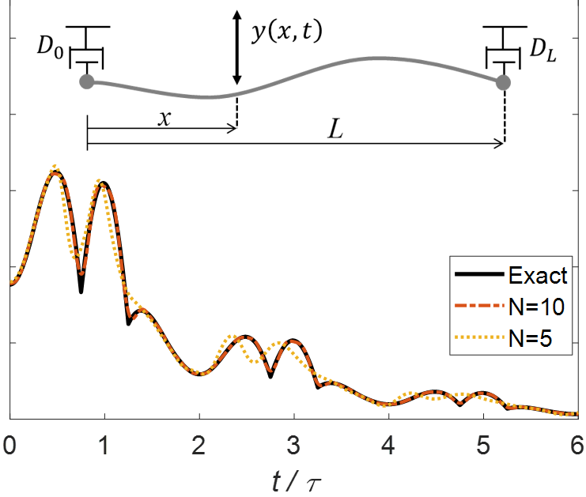
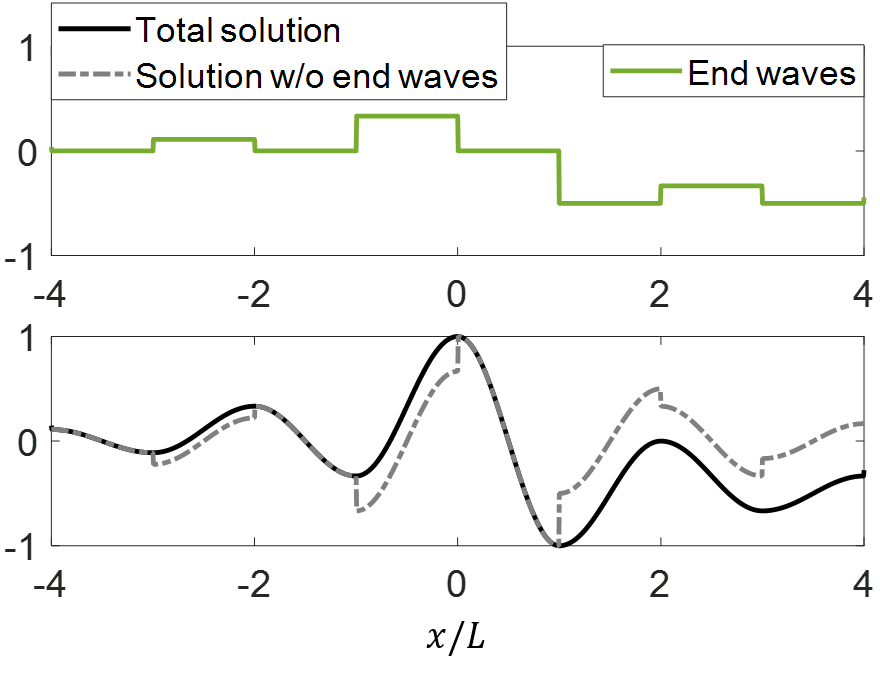

Theoretical Analysis of Wave Equations
Wave equation with boundary damping - exact solutions
Modal analysis - new orthogonality condition
A common method of solving initial boundary value problems is modal analysis. For systems with conservative boundary conditions the method is well-established, but for systems with boundary damping it does not provide closed form solutions. We derived the exact modal series solution with explicit expressions for the series coefficients for second order systems with damped boundaries. The key derivation element was a new orthogonality condition for the damped eigenfunctions.

Traveling waves - extended d'Alembert formula
We derived a traveling wave form of the exact solution using a single equivalent propagating wave, an extension of the classical d’Alembert formula to finite length structures with boundary damping. We considered nonzero initial displacement at the ends. In the literature, the associated discontinuity is avoided by restricting the initial displacement to be zero at the ends. We found that for nonzero end displacement there exists an additional, piecewise constant term, which we denoted by ‘‘end waves’’, that is essential to keep the response continuous.

Related publications
The complete infinite series solution of systems governed by the wave equation with boundary damping
L. Sirota, and Y. Halevi.
Wave Motion, vol. 51, no. 1, pp. 114–124, 2014.
L. Sirota, and Y. Halevi.
Mechanical Systems and Signal Processing, vol. 39, no. 1, pp. 47–58, 2013.
Modal representation of second order flexible structures with damped boundaries
L. Sirota, and Y. Halevi.
Journal of Vibration and Acoustics, vol. 135, no. 6, p. 064508, 2013.